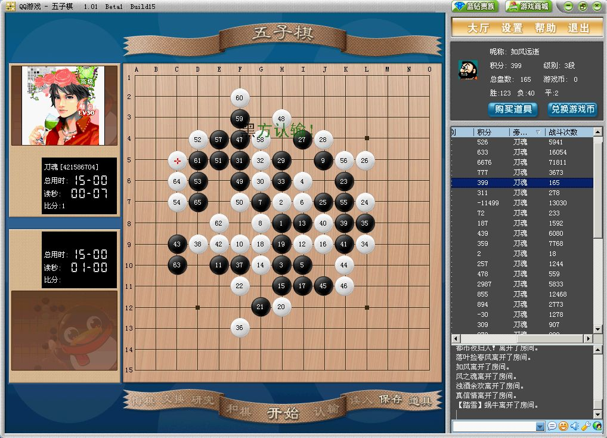
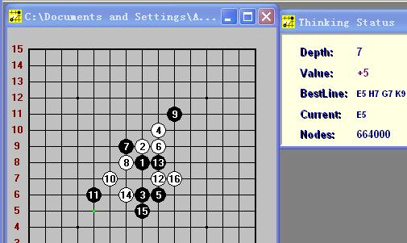
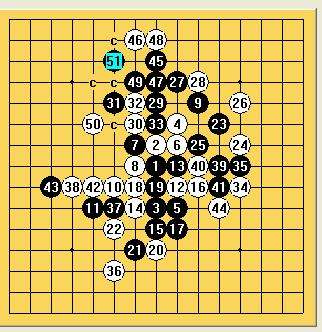
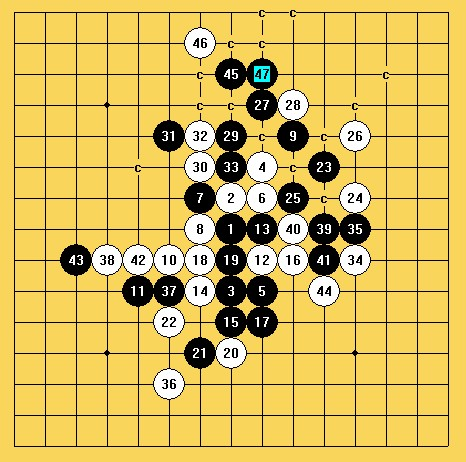
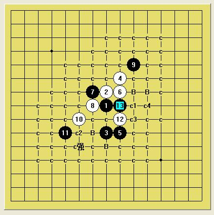
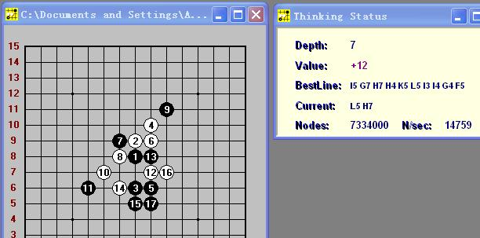

刀魂 vs 小棋后 （瑞星局）
#1 刀魂 vs 小棋后 （瑞星局）作者：刀魂 发表时间：2009-6-24 23:13:37
45手 应该可以杀的，悔了半天都没有杀出来，但是我感觉一定可以杀的，希望感兴趣的人探讨一下：

#2 Re:刀魂 vs 小棋后 （瑞星局）作者：小天元子 发表时间：2009-6-24 23:23:07
那我也顺便出道专杀3.8版本黑石的题
=======上图对应的爱五子棋谱代码如下，以便你拆解：========
h8h9h6i10i6i9g9g8j11f7e6i7i8g6h5j7e5
======================================================
白先VCT
#3 Re:刀魂 vs 小棋后 （瑞星局）作者：越狱行辕 发表时间：2009-6-24 23:33:15
楼上的真能骗 黑石？。。。 连我都能算出VCT。。。
#4 Re:刀魂 vs 小棋后 （瑞星局）作者：不知 发表时间：2009-6-24 23:35:09
 看不出2楼的图关3.82什么事..
看不出2楼的图关3.82什么事..#5 Re:Re:刀魂 vs 小棋后 （瑞星局）作者：小天元子 发表时间：2009-6-24 23:35:45

杀了不少人了。。。
#6 Re:刀魂 vs 小棋后 （瑞星局）作者：不知 发表时间：2009-6-24 23:38:22
..那个 BUG N多的3.82..#7 Re:刀魂 vs 小棋后 （瑞星局）作者：小天元子 发表时间：2009-6-24 23:39:45
3.82的BUG算是所有黑石中比较少的了#8 Re:刀魂 vs 小棋后 （瑞星局）作者：越狱行辕 发表时间：2009-6-24 23:45:28
你那个是它 算第一遍的结果吧 你等它 算完了么？#9 Re:刀魂 vs 小棋后 （瑞星局）作者：小天元子 发表时间：2009-6-24 23:46:43
咯，这就是它最后走的哟
#10 Re:刀魂 vs 小棋后 （瑞星局）作者：苯酚 发表时间：2009-6-25 6:43:51
设置问题吧，我用黑石能算出来的 。3.7就可以的
。3.7就可以的#11 Re:刀魂 vs 小棋后 （瑞星局）作者：苯酚 发表时间：2009-6-25 6:56:12
#12 Re:刀魂 vs 小棋后 （瑞星局）作者：卖身打胎 发表时间：2009-6-25 7:37:33

之前双方漏洞就很多了
#13 Re:刀魂 vs 小棋后 （瑞星局）作者：wrwak 发表时间：2009-6-25 7:56:25
更本就不会用黑石，笑死人，要截图也要depth=9的图。计算时间没设置好，各种没设好。
#14 Re:刀魂 vs 小棋后 （瑞星局）作者：sonix 发表时间：2009-6-25 8:04:15
 d11.rar
d11.rar［ 小天元子 于 2009-6-25 8:14:52 时花180金币送鲜花九朵］
［ 失落刀 于 2009-6-25 9:07:14 时奖励此帖[金币加 20 威望加1］
#15 Re:Re:刀魂 vs 小棋后 （瑞星局）作者：小天元子 发表时间：2009-6-25 8:21:29
=======上图对应的爱五子棋谱代码如下，以便你拆解：========
h8h9h6i10i6i9g9g8j11i7i8f7e6
======================================================
到这里依然要用这个13拆，当初我也是觉得这个13更好拆，但是以后拆瑞12时一样要拆这个13，所以你的这个13我只是粗拆了下，LSLS比小棋后暴力多了

近期我会把这个地毯拆完整的，以后还请老师多指教
另外上面这盘棋是盘闲棋，是在挂游戏时间时蛮下的（第一次陪人挂时间）
PS：我说的3.8版本黑石是指在3.7基础上通过注册码验证的那个版本，设置是最强的
#16 Re:刀魂 vs 小棋后 （瑞星局）作者：棋心 发表时间：2009-6-25 8:44:15
13L depth如何设置？？我也不会
黑石如何设置不如新发个帖介绍下你的经验。。
谢谢：）
#17 Re:刀魂 vs 小棋后 （瑞星局）作者：賢周 发表时间：2009-6-25 9:50:16
=======上图对应的爱五子棋谱代码如下，以便你拆解：========
h8h9h6i10i6i9g9g8j11i7i8g6k10f7e6
======================================================
=======上图对应的爱五子棋谱代码如下，以便你拆解：========
h8h9h6i10i6i9g9g8j11f7e6i7i8g6k10
======================================================
#18 Re:刀魂 vs 小棋后 （瑞星局）作者：小天元子 发表时间：2009-6-25 9:57:28
another nice 15#19 Re:刀魂 vs 小棋后 （瑞星局）作者：忧郁的双眼 发表时间：2009-6-25 11:49:38
3.82有个计算深度
随着计算时间的加入
深度会达到9
#20 Re:Re:刀魂 vs 小棋后 （瑞星局）作者：小天元子 发表时间：2009-6-25 12:51:34

重新验证下，昨天晚上那个设置确实有点问题 options下的system options一般都没设置的
options下的system options一般都没设置的
#21 Re:刀魂 vs 小棋后 （瑞星局）作者：小天元子 发表时间：2009-6-25 13:32:59
=======上图对应的爱五子棋谱代码如下，以便你拆解：========
h8h9h6i10i6i9g9g8j11f7e6i7f8e7g7i5i11h11h12
======================================================
sonix老师，验了下你的谱，原谱到这个19手后戛然而止，后面有几路比较麻烦，可以改杀如下
=======上图对应的爱五子棋谱代码如下，以便你拆解：========
h8h9h6i10i6i9g9g8j11f7e6i7f8e7g7i5i11h11h5h4g4f3f6g6k8j7d7f5e9d10j12h10d6
======================================================
［ wd1988 于 2010-6-6 20:03:11 时花20金币送鲜花一朵］
#22 Re:刀魂 vs 小棋后 （瑞星局）作者：极地剑客 发表时间：2009-6-27 5:26:42
很明显5楼的图~才算到第7层，且点为绿~并未算最后之红点。。。。。。呵呵~#23 Re:刀魂 vs 小棋后 （瑞星局）作者：gerbo 发表时间：2009-6-27 7:50:24
3.82不会装.以前会,现在不会了.以前会游泳,现在也不会了...以前不会喝酒,现在会了..#24 Re:刀魂 vs 小棋后 （瑞星局）作者：刀魂 发表时间：2009-6-29 9:40:14
 ,好久 没来拉
,好久 没来拉［ 我爱五子棋伯园 于 2009-9-23 16:32:33 时花50金币砸了你一个臭鸡蛋］